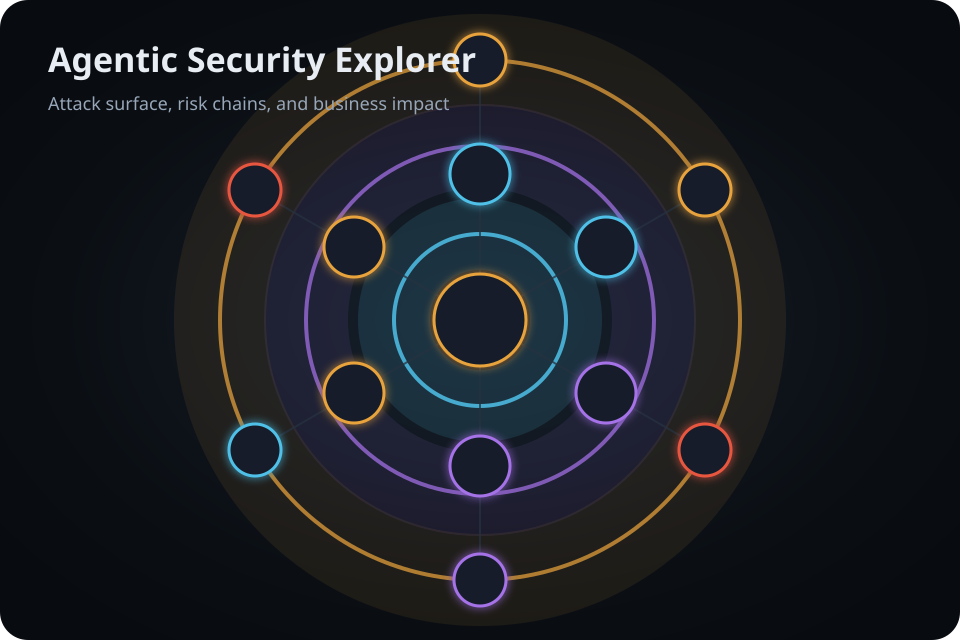

Explorer
Inspect agentic system components, risks, attack chains, and incident patterns through the interactive ASE map.
Learn Agentic Attack Surfaces, Risks, and Business Impact
Agentic Security Explorer (ASE) helps practitioners, leaders, students, and risk teams understand how autonomous agent systems are composed, where risks emerge, how failures chain across components, and what business impacts matter.
ASE complements the Secure Agent Trust Framework (SATF), a vendor-neutral framework for autonomous agent governance and contextual security.

Inspect agentic system components, risks, attack chains, and incident patterns through the interactive ASE map.
Translate technical agentic AI risks into plain-language business value, control concerns, and impact outcomes.
Understand how the agentic system operates through architecture diagrams, trust boundaries, and control placement.
Start guided learning paths for executives, architects, and practitioners.